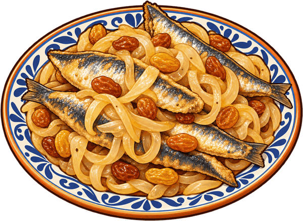

All recipes › Venezia
Journey city: Venezia
Sarde in saor
'Saor' means 'flavor': the marinade of vinegar and onion let sailors preserve fish during voyages.
Servings4
Prep40 min
Cook28 min
Rest24 h
DifficultyMedium
Allergens: Fish, Gluten, Tree nuts, Sulphites

Ingredients
- Fresh sardines · 800 g
- White onions · 800 g
- White wine vinegar · 200 ml
- Raisins · 40 g
- Pine nuts · 40 g
- Flour · to taste
- Seed oil for frying · to taste
- Extra-virgin olive oil · 4 tablespoons
- Salt · to taste
Step by step
- Clean the sardines by removing head and innards, wash and dry them well.
- Dust them with flour and fry in hot oil for 2–3 minutes. Drain on paper and salt.
- Soak the raisins in lukewarm water.
- Slice the onions thin and stew them in the extra-virgin oil over low heat for 20 minutes, without browning.
- Add the vinegar and cook 5 more minutes.
- In a dish, alternate layers of sardines, onions, squeezed raisins and pine nuts, ending with the onions.
- Cover and let rest in the fridge at least 24 hours.
Chef's tip. Serve at room temperature, as a starter or with polenta.
Cook this recipe in Tavolata too
In the game you match ingredients, complete orders and restore Italian cities, from Firenze to Milano. Free, with real recipes in the Cookbook.
Download on the App Store